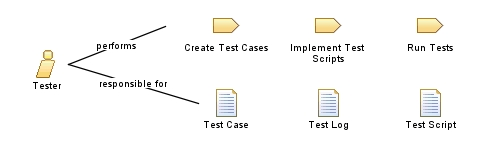

| Role: Tester |
 |
|
Relationships
 |
||
| Primary Performs | ||
|---|---|---|
| Additionally Performs | ||
| Modifies |
|
|
Main Description
This role is primarily responsible for the following tasks:
|
Staffing
| Skills | A person filling the this role should have the following skills:
Where automated testing is required, consider requiring these additional qualifications:
Note: Specific skill requirements vary depending on the type of testing that you are conducting. For example, the skills needed to successfully use system load testing automation tools are different from those needed for the automation of system functional testing. |
|---|---|
| Assignment Approaches | This role can be assigned in the following ways:
|
This program and the accompanying materials are made available under the |